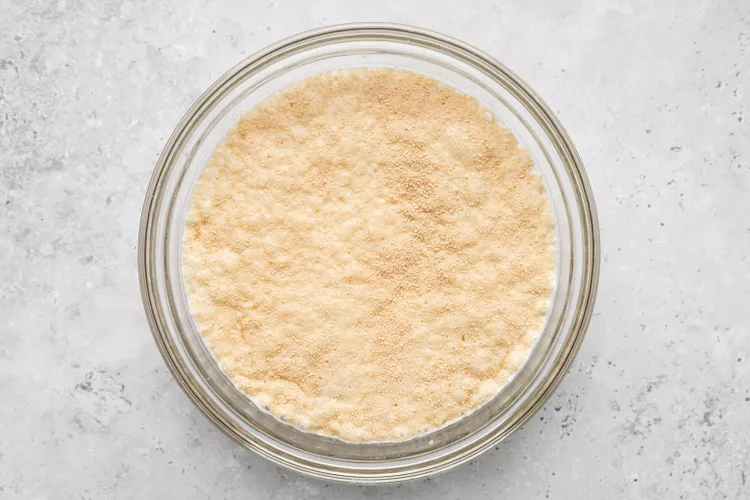

Donuts Recipe

Donuts
Few things are better than that first bite of a perfectly fluffy donut. Then, there’s the sensation of making
your own. From the yeasty aroma of proofed dough wafting through the kitchen to the smell of freshly fried
donuts, it’ll transport you to your favorite local bakery.
The best part? Making donuts is mostly hands-off. You can spend the bulk of this recipe flipping through a book
or binging the latest TV show while you wait for your dough to rise.
Am I saying you’ll never buy a “hot now” donut from the store again? Nope. But you’ll sure taste the difference
and have a blast experimenting with your favorite flavors at home. Plus, this is a great opportunity to get the
kids involved (pre-frying) helping with kneading and shaping the dough. Once the fry station is all packed up,
the kiddos can put their artistic eye to the test with different glazes and decorations.
Whether you’re team frosted, powdered, or sugared, you’ll find joy in making this homemade donut recipe your
own. Happy frying!
Ingredients
For the donuts
- 1 1/4 cups whole milk, lukewarm (110°F to 115°F)
- 1/4 cup granulated sugar
- 1 packet (2 1/4 teaspoons) active dry yeast
- 4 1/2 cups (540g) all-purpose flour
- 1 teaspoon kosher salt
- 2 large eggs, lightly beaten
- 1 stick (1/2 cup) unsalted butter, melted and cooled for 10 minutes
- 2 quarts neutral oil (like canola or vegetable oil), for frying, plus more for greasing the bowl
For the glaze
- 6 cups (680g) powdered sugar, sifted
- 3/4 cup whole
- 1 1/2 teaspoons vanilla extract
Steps
- Activate the yeast:
Whisk together the lukewarm milk, sugar, and yeast in a small bowl. Set aside until foamy, about 10 minutes.

- Make the dough:
Meanwhile, combine the flour and salt in the bowl of a stand mixer fitted with the dough hook attachment. Add
the frothy yeast mixture along with the eggs and butter.
Mix on medium-low speed until combined, about 1 to 2 minutes, stopping to scrape down sides as needed. Increase
the speed to medium and knead the dough for 4 more minutes. The dough will be slightly sticky and mostly clear
sides of the bowl but may still stick to the bottom.
- Proof the dough:
Transfer the dough to a large, lightly greased bowl, turning to coat, and cover with lightly greased plastic
wrap. Place the dough in a warm spot until doubled in size, about 1 hour.
- Roll out the dough and proof again:
Once proofed, punch the dough down and turn it out onto a lightly floured surface. Roll the dough into a circle
roughly 12 inches in diameter that is 1/2 inch thick.
Use a 3-inch round cutter to cut out about 12 rounds. Use a 1-inch cutter to cut out the center holes of each
donut, reserving the holes to fry.
Gather any scraps and roll them into balls about the size of the holes. Transfer the donuts to a parchment-lined
baking sheet and the holes to another parchment-lined baking sheet, spacing the cut dough at least 1/2 inch
apart.
Cover both baking sheets with lightly greased plastic wrap. Let rise once more in a warm place for about 30
minutes. The dough is proofed when you gently touch a donut and the dough slowly bounces back.
- Fry the donuts:
Fill a large, deep, heavy-bottomed pot (like a Dutch oven) with about 2 to 3 inches of oil; it should reach no
more than halfway up the pot. Heat over medium heat until the oil reaches 350°F.
Line a platter or baking sheet with paper towels and set a wire rack over another baking sheet, placing both by
your pot.
Without overcrowding the pot, fry 2 to 3 donuts at a time, turning once, until golden brown all over and puffed,
2 to 3 minutes. Use a slotted spoon, kitchen spider, or chopsticks to transfer the donuts to the paper towels to
drain for 1 minute, then transfer to the wire rack.
Return the oil to 350°F and finish frying the donuts in batches. Let cool for 10 to 15 minutes before glazing.
- Fry the donut holes:
Fry the donut holes a handful at a time until golden brown all over, about 1 minute, stirring and turning them
frequently. Drain.
- Glaze:
If using a glaze, whisk together the ingredients until the mixture is smooth and glossy. Place the donuts, one
by one, in the glaze and use a spoon to coat on all sides. Use 2 forks to remove from the glaze and let the
excess drip off. Place on the wire rack until the glaze is set.
Homemade donuts are best eaten within a few hours but will keep in an airtight container for up to 3 days.